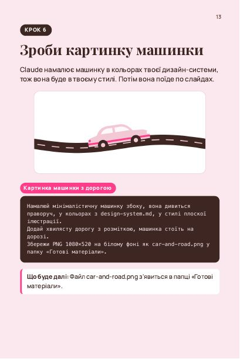

Динамічна карусель у Claude
Покрокова інструкція на 20 сторінок. Завантаж PDF, щоб читати в зручному розмірі.
Установлюєш один раз і потім повторюєш з різними каруселями, і це буде швидше, бо воно виглядає ніби довго. Але далі, коли все налаштуєш, ти швидше будеш створювати каруселі.
Завантажити PDF


